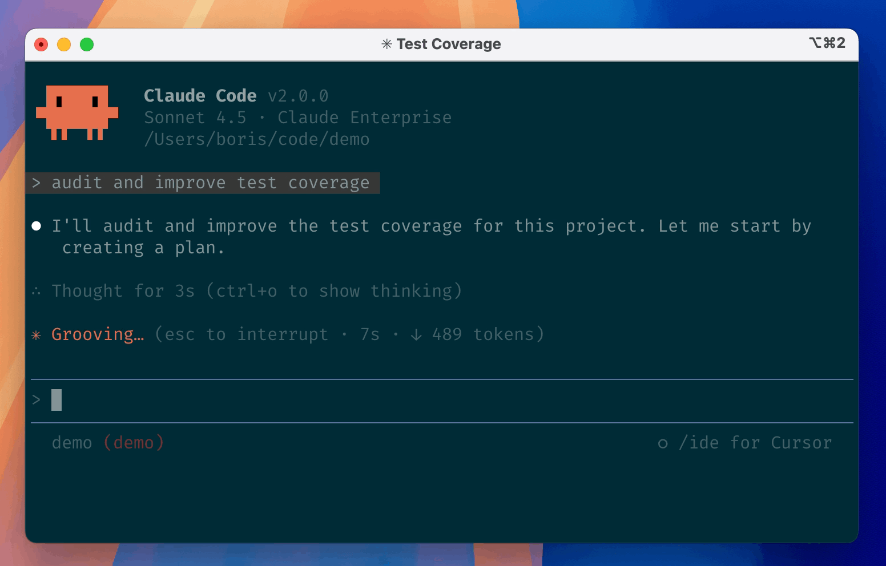

长任务会把规则也带进上下文
一次代码修改可能包含读文件、讨论方案、跑测试和多轮修正。聊天记录越来越长时，Claude Code会压缩早期内容，留下摘要继续工作。v2.1.311针对这段交接修复了标准上下文超限误报，以及压缩后项目说明仍使用旧副本的问题。用户刚改过CLAUDE.md或MEMORY.md，接下来的任务就应该按当前文件理解要求；如果摘要之后又拿回旧规则，代码可能仍能运行，却已经偏离刚确认的约束。这个版本关注的不是生成更多代码，而是继续同一项工作时不要丢掉已有决定。
Claude Code v2.1.311 · 产品更新 · 官方发布说明

一次代码修改可能包含读文件、讨论方案、跑测试和多轮修正。聊天记录越来越长时，Claude Code会压缩早期内容，留下摘要继续工作。v2.1.311针对这段交接修复了标准上下文超限误报，以及压缩后项目说明仍使用旧副本的问题。用户刚改过CLAUDE.md或MEMORY.md，接下来的任务就应该按当前文件理解要求；如果摘要之后又拿回旧规则，代码可能仍能运行，却已经偏离刚确认的约束。这个版本关注的不是生成更多代码，而是继续同一项工作时不要丢掉已有决定。
官方上下文说明把几类材料分开：早期对话压成结构化摘要，项目根目录说明、相关规则和自动记忆从磁盘重新加入，部分近期访问文件也会重新读取。摘要因此不是整个工作区的备份，也不能保证每句讨论都原样保留。开发者可以把长期有效的项目约束放入明确文件，把当前验收条件留在任务说明中，再用/context检查占用。这样出了问题才有具体可比对象：是文件内容没更新、摘要漏了要求，还是执行时理解错了，而不是只凭回复语气判断它是否还记得。
长会话里还有另一种容易误认的状态：界面已经返回或等待超时，后台命令却未结束。交互文档提供后台任务列表与中断入口；开发者应该先查看现有任务，再决定是继续等待、终止还是重开。尤其是测试、构建和数据处理，不宜因为暂时没有新文字就再次启动同一过程。即便代理恢复了聊天，已经发生的文件修改和外部动作也不会自动被撤回。需要回退时仍要查代码差异、版本控制和相关系统状态，不能把会话恢复当作事务回滚。
开发者看到超时提示时，最容易做的是再发一次命令。此次发布调整了命令超时结果：展示已经产生的输出，并说明命令还在后台运行。后台会话的进程退出后，消息也不再保证一个实际上不会发生的自动重启，而是说明如何恢复。这些文字影响的是用户接下来的操作：先查看既有任务，还是重新启动一个副本。长会话还可能跨云端与本机，传回经过压缩的会话时会提醒从最近压缩点接续，并非全部旧消息都在本地。配图保留官方旧版终端外观，不能据此判断本次修复已在项目中奏效；没有公开的独立完成率或节省时间数据。